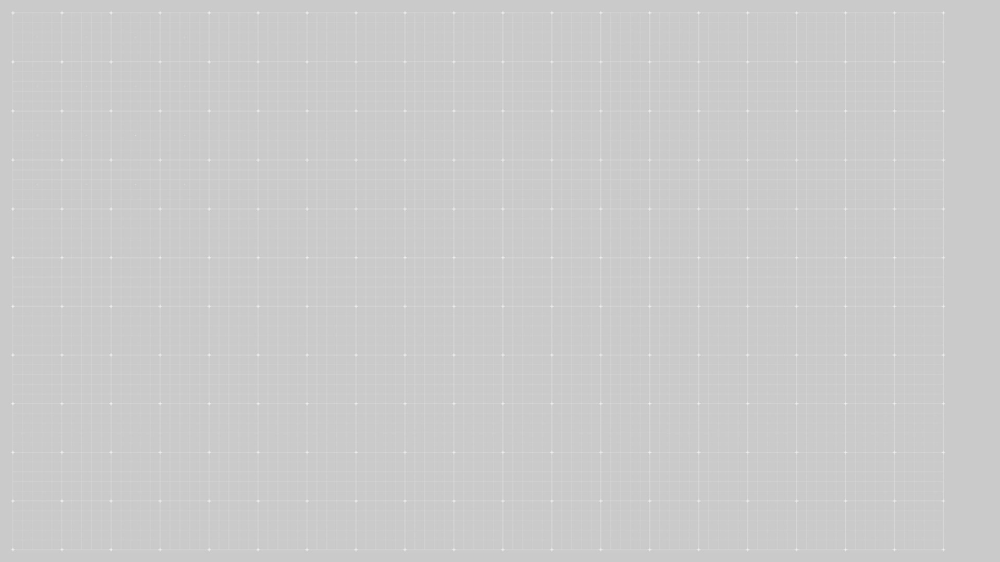

공공디자인으로 행복한 공간 만들기
다정한 도시
Scroll Down

“
우리는 늙습니다.?
”
“
노화를 겪으면
어떻게 바뀔까요?
”
대한민국 치매 현황
60세 이상 추정치매환자수
치매환자 1인당 치매관리비
출처 : 전국치매역학조사 (보건복지부 중앙치매센터, 2017 ), 2017~2022년 주민등록연양인구(통계청, 2023)

복지관 별관의 과거 모습


‘인생정원’을 만든 김정욱 총감독은 말합니다.

“
어르신들이 가장 쉽게 접근할 수 있는 게 식물이죠
”
어르신들이 가장 쉽게 접근할 수 있는 게 식물이죠
가꾼 식물이 자라나는 모습을 보면서, 성취감과 긍정적인 감각을
얻으십니다
이를 통해 어르신들의 지속적인 방문을 유도하고,
사회적인 교류를 할 수 있도록 하는 것을
‘인생정원’의
목표로 삼았습니다
”
